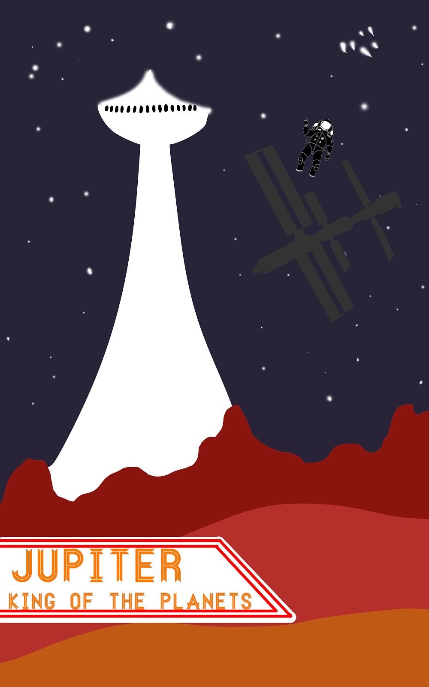

LOGAN HASTINGS
I love memes
From the start of the year back in late 2017, I began this class lacking knowledge of everything web design, photoshop and pretty much everything else. I also had no idea what sort of creativity was about to be unleashed. From the first project to the last, I gave it my all when it came to THINKING. This massive culmination of projects and photos represents my growth of knowledge on this subject and how my mind allowed itself to freely express its thoughts through artwork.
Logan Hastings

Welcome to my Web Portfolio. This webpage will contain many different projects that I've create over my time in this class and will show how I've grown over the past year.
I'm experienced with:
Photography
Web Design
Photoshop
MY WORK
Here are some of my latest and greatest memes and projects.
Click on the images to make them bigger and see description.
1, 2, 3: "Best Of"
4, 5, 6: "102 2d Design Gallery"
7, 8, 9: "171 Photoshop Gallery"

This is one of four pictures that were created as a demo and starting point for us students to get an idea of what we wanted to have as a final space project. I ended up making very few changes and chose this project because I thought it looked eye-catching and appealing. I traced out a space picture from online as one layer, then erased that layer and began filling in my own space elements.
This was an introduction to adding new effects to images found on the internet. This was the start to MY path of learning in the field of photoshop tools. I had the original layer, then simply added a few color effects that we were taught how to use earlier in the year. In the end, I believed the final product looks fantastic.

Me and two others in class worked on this as a group project to create a poster that would be shown off to the public at LCC. I had to do with the font edits and most of the space effects in the background. The others got the silhouette and layout for the back.

This ell looks like something that would be shown off at an abstract are museum. It was part of a big vector assignment around mid year. I was messing around and exploring with the new tools I had learned about and this was what I got. I'm proud of the design just because of how unique it looks.
This quilt based off an African Quilt Design was one of three projects for a final assignment. While all of them looked similar, I chose this quilt due to its smooth and lightfelt color scheme.
This project was created simply for an assignment at the beginning of the year where we had to represent our knowlegde of symmetry and asymmetry. i took the 3 pictures of the three best known chefs at the current time, and pasted them onto the trendy fidget spinner. One of the most poular things sold in stores at that time.
This is one of my top favorite photoshop illustrations because it’s a simple picture that represents a bigger meaning. There is an image of love being represented through flowers, which isn’t seen a lot in art. I got the creative idea of pasting drawn flowers (by me) on drawn people (by me). I believe it turned out great and most others who look at it would likely agree. Not much new was learned on this assignment though.
This was an assignment that was very simplistic, but still very enjoyable for me for some odd reason. The class was left an entire day to get creative and make a postage stamp of any location they want. I got to create MY interpretation of a postal stamp, but do whatever I wanted to with it. The final product is unedited and I left it like that because I felt there was nothing that had to be improved.
This project was created along with three other edited rough drafts that had to be submitted for a final project. This showed how we use lighting tools in photoshop. Lost in Thought was my favorite due to its focus on a more dim and quiet environment, along with focusing solely on a single person as opposed to the others that were shown in the other three drafts.
MEDIA
I'd love your feedback!
Lansing, US
Phone: 517-897-1749
Email: hastingl@mail.lcc.edu
Let me know if there are any collaborations you'd like to let me in on :)